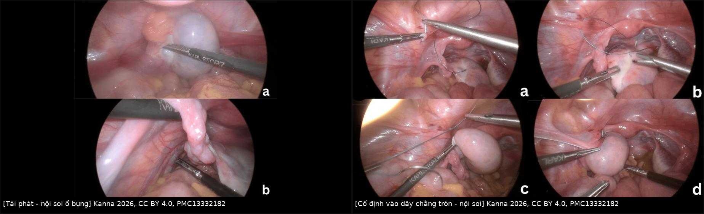
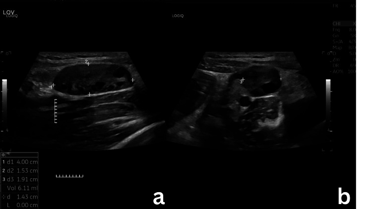
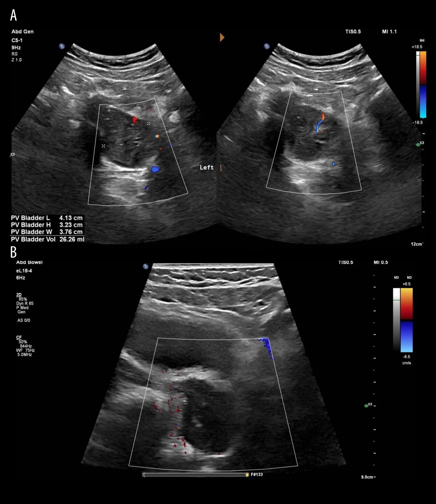
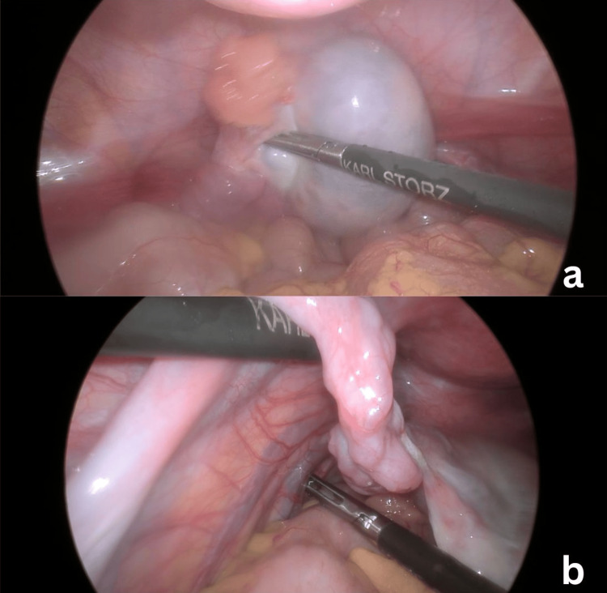

1950 — Cố định buồng trứng sau tháo xoắn / Oophoropexy after ovarian detorsion
Tags: pattern:xoan-phan-phu pattern:xoan-tai-phat vung:tieu-khung vung:phan-phu protocol:sieu-am-Doppler protocol:noi-soi-o-bung
Mức chắc chắn (certainty): tổng hợp y văn (literature synthesis) — số liệu từ một đoàn hệ 38 ca cố định lần đầu (PMC12414049), một đoàn hệ nhi 18 ca (PMID 41110824), một đoàn hệ 56 trẻ (PMC13510985), một nghiên cứu bệnh–chứng 30 + 60 ca (PMID 42704740) và ba ca nguyên văn có ảnh (PMC13332182; PMC13657673). Không có thử nghiệm ngẫu nhiên; mọi khuyến nghị kỹ thuật là thực hành đồng thuận, chỗ suy luận được ghi rõ.
Câu chốt: Cố định buồng trứng (oophoropexy) là quyết định sau khi đã tháo xoắn và cứu được buồng trứng — không phải để điều trị cơn xoắn cấp. Ba con số quyết định: (1) xoắn tái phát sau điều trị bảo tồn 15% dân số chung, tới 70% ở trẻ trước dậy thì/vị thành niên (PMC12414049); (2) sau cố định lần đầu, tái phát chung 18,4%, trong đó khâu gấp dây chằng tử cung–buồng trứng 25,9% (7/27) so với khâu vào dây chằng tròn 0% (0/11) — khác biệt chưa có ý nghĩa (p = 0,08); (3) ở trẻ, cố định chỉ vào dây chằng tròn tái phát 100% (5/5) so với 20% ở các vị trí khác (P = 0,027) — bằng chứng xung đột giữa người lớn và trẻ em, phải đọc theo tuổi.
1. Tổng quan bệnh học – cơ chế hình ảnh (TẠI SAO)
1.1 Giải phẫu quyết định chỗ xoắn và chỗ cố định
- Buồng trứng treo bằng dây chằng tử cung–buồng trứng (utero-ovarian ligament / ligamentum ovarii proprium) ở phía trong, dây chằng treo buồng trứng (suspensory ligament, chứa mạch buồng trứng) ở phía trên–ngoài và mạc treo buồng trứng (mesovarium). Trục xoắn là trục mạch máu trong dây chằng treo; buồng trứng quay quanh trục này theo chiều kim đồng hồ hoặc ngược, kéo theo vòi trứng.
- Yếu tố nền tảng của xoắn tái phát: dây chằng tử cung–buồng trứng dài, giãn, tăng di động (hypermobile) — đặc trưng ở trẻ trước dậy thì với phần phụ kích thước bình thường, không u. Ở người lớn, yếu tố thường gặp hơn là nang buồng trứng (nang hoàng thể, nang nang), buồng trứng to do kích thích buồng trứng/PCOS, thai kỳ (tử cung to làm đổi trục) (PMC12414049; PMID 41110824).
- TẠI SAO tháo xoắn đơn thuần không sửa được nguyên nhân: tháo xoắn chỉ giải phóng cơn xoắn hiện tại; chiều dài và độ chùng của dây chằng vẫn nguyên → buồng trứng vẫn quay lại được quanh trục mạch máu. Cố định (oophoropexy) tạo điểm neo hoặc rút ngắn dây chằng, làm giảm cung quay quanh trục mạch máu. Vì vậy cố định không phải là điều trị cơn đau cấp, mà là dự phòng tái phát — và cũng không sửa được chất lượng mô buồng trứng đã bị thiếu máu.
- TẠI SAO buồng trứng to ra khi xoắn: trong xoắn, tĩnh mạch và bạch mạch bị ép trước → ứ dịch, phù nề, buồng trứng to nhanh; động mạch còn thông một phần nhờ tuần hoàn kép (động mạch buồng trứng + nhánh động mạch tử cung). Vì vậy hình ảnh kinh điển là buồng trứng to, nang noãn bị đẩy ra ngoại vi, chứ không phải khối đặc.
1.2 Vật lý siêu âm – vì sao Doppler không được dùng để loại trừ
- Siêu âm đầu dò âm đạo/ổ bụng: buồng trứng to bất đối xứng, nhu mô echo dày/không đồng nhất, nang noãn ngoại vi, có thể thấy dấu xoáy (whirlpool sign) — cuống mạch xoắn hình “xoáy nước”; trong loạt 38 ca, whirlpool gặp tới 73,3%, phù buồng trứng 80%, kích thước buồng trứng ≤ 45 mm ở nhóm được cố định (PMC12414049).
- Doppler màu: xoắn tĩnh mạch trước, động mạch sau → có thể còn phổ động mạch dù đã xoắn; không có phổ thì gợi ý nặng hơn nhưng phổ bình thường không loại trừ xoắn. Ca nguyên văn 9 tuổi: buồng trứng 41 × 37 × 32 mm (~27 mL), phổ giảm nhưng còn, mổ xác nhận xoắn ~360° (PMC13657673). Đây là lý do quyết định mổ dựa trên lâm sàng, không dựa riêng Doppler.
- Thể tích buồng trứng là chỉ số theo dõi khách quan: ca 12 tuổi có buồng trứng 26,72 mL trước mổ; sau cố định 6 tháng còn 4,00 × 1,53 × 1,91 cm = 6,11 mL (PMC13332182). Ca 9 tuổi: ~27 mL trước mổ → 16 × 14 × 24 mm (~2,7 mL) sau 8 tuần (PMC13657673). Thể tích giảm > 70% là bằng chứng hồi phục tưới máu, không phải teo.
- CT/MRI: không cần cho chẩn đoán xoắn cấp; MRI hữu ích khi mang thai hoặc khi siêu âm không kết luận, để loại u phần phụ và áp-xe vòi trứng. Không có dấu hiệu đặc hiệu trên CT cho “xoắn” — CT chỉ loại trừ nguyên nhân khác.
1.3 Dịch tễ và gánh nặng tái phát (số liệu định lượng)
- Xoắn phần phụ chiếm 2–6% cấp cứu phụ khoa (PMC12414049).
- Tái phát sau điều trị bảo tồn: 15% dân số chung; tới 70% ở trẻ trước dậy thì/vị thành niên; các loạt gộp ghi 19–38% (PMC12414049 dẫn y văn).
- Sau cố định lần đầu: 18,4% chung; 25,9% sau khâu gấp dây chằng tử cung–buồng trứng; 0% sau khâu vào dây chằng tròn (n = 11) (PMC12414049).
- Ở trẻ (18 ca, trung vị 9,4 tuổi): tái phát chung 44%; 40% sau tháo xoắn đơn thuần và 50% sau tháo xoắn + cố định (p = 1); tất cả ca cố định vào dây chằng tròn tái phát (5/5 = 100%) so với 20% ở các vị trí khác (P = 0,027) (PMID 41110824).
- Loạt 56 trẻ (2010–2025): bảo tồn buồng trứng 62,5%; tái phát được ghi nhận 5,4%; xoắn trước sinh có cắt buồng trứng 8/8 = 100% so với 27,1% ở trẻ sinh sau (PMC13510985).
2. Mẫu hình + chẩn đoán phân biệt theo vị trí và theo tuổi (gamut)
2.1 Theo bối cảnh lâm sàng
- Trẻ trước dậy thì, phần phụ bình thường: dây chằng tử cung–buồng trứng dài/tăng di động → xoắn tái phát nhiều lần; đây là nhóm lợi ích lớn nhất từ cố định nhưng cũng là nhóm bằng chứng kỹ thuật yếu nhất (các loạt 5–18 ca).
- Tuổi sinh sản, có nang: nang hoàng thể/nang nang là “điểm tựa” gây xoắn; xử trí là bóc nang (cystectomy) hơn là cố định đơn thuần — trong loạt 38 ca cố định, chỉ giữ nang sinh lý (hoàng thể, nang nang, hoàng thể xuất huyết), nang bệnh lý được bóc (PMC12414049).
- PCOS/kích thích buồng trứng/thai kỳ: buồng trứng to, nhiều nang → nguy cơ tái phát và xoắn đối bên; cố định vẫn khả thi trong 3 tháng đầu thai kỳ, 7/8 ca trong tam cá nguyệt 1 không biến chứng (PMC12414049).
- Sau cắt vòi trứng/mổ vùng chậu: dính và thay đổi giải phẫu → cần đánh giá tại mổ, không suy đoán trên siêu âm.
2.2 Gamut theo vị trí cố định
- Gấp/rút ngắn dây chằng tử cung–buồng trứng (ovarian ligament plication): khâu gấp đôi dây chằng bằng chỉ không tiêu; kỹ thuật phổ biến nhất (71% trong loạt 38 ca) (PMC12414049).
- Khâu dây chằng tử cung–buồng trứng vào dây chằng tròn (“hot-dog in a bun” / ovario-round ligament fixation): hai mũi chỉ không tiêu giữa hai dây chằng, buồng trứng nằm giữa như “xúc xích trong bánh mì”; 0/11 tái phát ở người lớn (PMC12414049).
- Khâu vào thành chậu (pelvic sidewall): hiệu quả thấp, không an toàn khi tĩnh mạch chậu giãn — ca nguyên văn ghi rõ “fixation to the pelvic sidewall technically unsafe” vì tĩnh mạch chậu giãn lớn (PMC13332182).
- Khâu vào dây chằng cùng–tử cung (uterosacral), hố buồng trứng (ovarian fossa), thân tử cung: có mô tả, số liệu rất ít; trong loạt nhi, cố định vào dây chằng tròn thất bại 100%, các vị trí khác 20% (PMID 41110824).
- Cố định hai bên (prophylactic contralateral): không có bằng chứng từ thử nghiệm; ca xoắn không đồng thời (asynchronous) ở buồng trứng còn lại đã được báo cáo từ 1993 (PMID 8321802) — quyết định cá thể hóa, không mặc định.
2.3 Phân biệt nguyên nhân đau tái phát sau cố định
- Xoắn tái phát (đau từng cơn, buồng trứng to, whirlpool) — chẩn đoán tại mổ, không loại trừ bằng Doppler.
- Dính sau mổ (đau mạn, buồng trứng dính thành chậu) — MRI/CT ít giá trị, chẩn đoán lâm sàng ± nội soi.
- Đau do chính cố định (đau vùng chậu mạn, giao hợp đau) — số liệu bệnh–chứng ở mục 5.
- Nang buồng trứng mới, viêm phần phụ, viêm ruột thừa, sỏi niệu quản — siêu âm + xét nghiệm.
3. Bảng so sánh phân biệt (ma trận đối chiếu)
| Thực thể / kỹ thuật | Hình ảnh – mô tả tại mổ | Chốt vào (rule-in) | Chốt loại (rule-out) | Gợi ý xác nhận |
|---|---|---|---|---|
| Gấp dây chằng tử cung–buồng trứng | Dây chằng bị gấp đôi, khâu chỉ không tiêu; buồng trứng còn di động trong giới hạn | Dây chằng dài, chùng + tái phát cùng bên; buồng trứng còn sống sau tháo xoắn | Dây chằng đã ngắn, không còn chùng; buồng trứng hoại tử phải cắt | Thấy mũi chỉ + đo chiều dài dây chằng; theo dõi tái phát 25,9% (PMC12414049) |
| Khâu vào dây chằng tròn (“hot-dog”) | Hai mũi chỉ giữa dây chằng tử cung–buồng trứng và dây chằng tròn; buồng trứng áp vào dây chằng tròn | Tái phát sau gấp dây chằng; dây chằng tròn to, chắc, không có tĩnh mạch giãn quanh | Tĩnh mạch chậu giãn lớn; không xác định được niệu quản | 0/11 tái phát ở người lớn (p = 0,08); 100% tái phát khi chỉ khâu dây chằng tròn ở trẻ (PMID 41110824) |
| Khâu thành chậu | Buồng trứng cố định vào phúc mạc thành chậu; dễ căng, dễ rách phúc mạc | Cần neo cố định khi không tiếp cận được dây chằng tròn | Tĩnh mạch chậu giãn; nguy cơ chảy máu/tổn thương mạch | Ca nguyên văn: không an toàn khi tĩnh mạch chậu giãn (PMC13332182) |
| Không cố định (chỉ tháo xoắn) | Buồng trứng hồi phục kích thước, không có chỉ khâu | Xoắn lần đầu, không tái phát, có nang đã bóc | Tái phát cùng bên ≥ 2 lần; dây chằng dài cả hai bên | Tái phát 40% ở trẻ sau tháo xoắn đơn thuần (PMID 41110824) |
| Xoắn đối bên không đồng thời | Buồng trứng còn lại xoắn sau nhiều tháng–năm | Tiền sử xoắn một bên + đau bên đối diện; phần phụ bình thường | Có u/nang giải thích được; không có dấu hiệu xoắn | Báo cáo ca từ 1993; không có tỷ lệ chuẩn (PMID 8321802) |

Trái: buồng trứng phì đại, cuống mạch xoắn, tĩnh mạch chậu giãn. Phải: các thì khâu cố định buồng trứng vào dây chằng tròn. Nguồn: Kanna 2026, CC BY 4.0, PMC13332182 — ảnh ghép letterbox, không crop.3.1 Đọc đúng sự xung đột bằng chứng giữa người lớn và trẻ em
- Người lớn (loạt 38 ca): khâu vào dây chằng tròn không tái phát ca nào nhưng n = 11, khoảng tin cậy rộng, p = 0,08 → chỉ là tín hiệu, không phải bằng chứng thuyết phục (PMC12414049).
- Trẻ em (18 ca): cố định chỉ vào dây chằng tròn tái phát 5/5; tác giả kết luận dây chằng tròn là vị trí cố định không phù hợp ở nhóm này (P = 0,027) (PMID 41110824).
- Cách đọc cho thực hành: ở trẻ, ưu tiên gấp dây chằng tử cung–buồng trứng hoặc khâu kết hợp tử cung–buồng trứng + dây chằng tròn; ở người lớn tái phát sau gấp dây chằng, khâu dây chằng tròn là lựa chọn hợp lý. Không áp dụng kết quả người lớn cho trẻ và ngược lại.
4. Protocol can thiệp + theo dõi
4.1 Trước mổ
- Siêu âm Doppler là bước đầu: đo thể tích buồng trứng (ba chiều), mô tả nang, whirlpool, phổ Doppler. Ghi rõ không loại trừ xoắn khi còn phổ.
- Xét nghiệm β-hCG (loại thai ngoài tử cung + ảnh hưởng lựa chọn thì mổ), công thức máu, CRP.
- Không chờ CT/MRI nếu bệnh cảnh điển hình; MRI khi mang thai hoặc cần loại u.
4.2 Trong mổ (nội soi là chuẩn)
- Đánh giá: số vòng xoắn (ca nguyên văn: 4 vòng, ~360°), màu buồng trứng, dịch ổ bụng.
- Tháo xoắn và chờ 5–10 phút: màu hồng lại một phần là dấu hiệu còn sống; không cắt buồng trứng chỉ vì màu tím — loạt 56 trẻ bảo tồn được 62,5%.
- Xử lý nang nếu có (bóc nang, cầm máu kỹ).
- Quyết định cố định: tái phát cùng bên, phần phụ bình thường/dây chằng dài, hoặc nguy cơ cao (trẻ trước dậy thì, PCOS, thai). Không cố định thường quy cho mọi ca xoắn lần đầu.
- Kỹ thuật: chỉ không tiêu (Ethibond/Prolene/Silk) — trong loạt 38 ca, Ethibond dùng nhiều nhất; không có khác biệt tái phát theo loại chỉ (PMC12414049). Khâu 2 mũi giữa dây chằng tử cung–buồng trứng và dây chằng tròn (kiểu “hot-dog”), hoặc gấp dây chằng tử cung–buồng trứng. Xác định niệu quản trước khi khâu dây chằng tròn (nguy cơ tổn thương niệu quản khi người mổ ít kinh nghiệm).
- Thai kỳ: cố định được thực hiện an toàn trong tam cá nguyệt 1 (7/8 ca, không biến chứng) (PMC12414049).
4.3 Theo dõi sau mổ
- Siêu âm lại 6–8 tuần và 6 tháng: thể tích buồng trứng, nang noãn, phổ Doppler. Ca 12 tuổi: 26,72 → 6,11 mL sau 6 tháng; ca 9 tuổi: ~27 → 2,7 mL sau 8 tuần (PMC13332182; PMC13657673).

Buồng trứng hồi phục hình thái, nang noãn phân bố đều; thể tích giảm từ 26,72 mL còn 6,11 mL. Nguồn: Kanna 2026, CC BY 4.0, PMC13332182 — Fig. 5.- Tư vấn triệu chứng: đau vùng chậu mạn, giao hợp đau, đau bụng kinh có thể tăng sau cố định (mục 5) — hỏi chủ động ở mỗi lần khám.
- Tái phát vẫn có thể xảy ra dù đã cố định — dạy bệnh nhân/cha mẹ nhận biết đau từng cơn để quay lại sớm.
flowchart TD
A[Buồng trứng xoắn, đã tháo xoắn] --> B{Buồng trứng còn sống?}
B -->|Không| C[Cắt buồng trứng / vòi trứng]
B -->|Có| D{Tái phát cùng bên hoặc dây chằng dài, phần phụ bình thường?}
D -->|Không| E[Không cố định; theo dõi 6-8 tuần]
D -->|Có| F{Tuổi và bối cảnh}
F -->|Trẻ trước dậy thì| G[Gấp dây chằng tử cung-buồng trứng<br/>hoặc kết hợp với dây chằng tròn]
F -->|Người lớn tái phát sau gấp dây chằng| H[Khâu vào dây chằng tròn - hot-dog]
F -->|Thai kỳ| I[Cố định được ở tam cá nguyệt 1]
G --> J[Siêu âm 6-8 tuần và 6 tháng]
H --> J
5. Biến thể bình thường và cạm bẫy
- Còn phổ Doppler ≠ không xoắn. Ca 9 tuổi có phổ giảm nhưng còn, mổ xác nhận xoắn 360°; “phổ bình thường” không được dùng để trì hoãn mổ khi lâm sàng mạnh (PMC13657673).
- Buồng trứng tím/đen không đồng nghĩa hoại tử. Tháo xoắn và chờ giúp cứu 62,5% trong loạt 56 trẻ; cắt sớm là mất buồng trứng oan (PMC13510985). Ngoại lệ: xoắn trước sinh có tỷ lệ cắt 100% (8/8) — nhưng đây là bối cảnh riêng.
- Cố định không phải “vô hại”: so với tháo xoắn đơn thuần, cố định làm tăng đau bụng kinh nặng 46% vs 10% (aOR 4,11; KTC 1,15–14,66), giao hợp đau 23,3% vs 1,7%, đau vùng chậu không do kinh 36,7% vs 11,7%; khả năng sinh sản tương đương; theo dõi trung vị 48 tháng (PMID 42704740). Phải tư vấn trước mổ.
- Vị trí cố định sai làm tăng tái phát: ở trẻ, khâu chỉ vào dây chằng tròn tái phát 5/5 — khác với người lớn; đừng suy rộng kỹ thuật “hot-dog” cho trẻ khi chưa có dữ liệu (PMID 41110824).
- Khâu thành chậu khi tĩnh mạch chậu giãn có thể gây chảy máu/tổn thương mạch; ca nguyên văn đã bỏ phương án này vì lý do an toàn (PMC13332182).
- Teo buồng trứng tiến triển gặp 38% sau xoắn ở loạt nhi, dù đã tháo xoắn — cần theo dõi thể tích, không hứa “buồng trứng bình thường” (PMID 41110824).
- Cố định hai bên thường quy: không có bằng chứng; xoắn đối bên không đồng thời là ca hiếm nhưng có thật (PMID 8321802) — quyết định theo nguy cơ từng bệnh nhân.
- Mẫu số nhỏ, p = 0,08: đừng khẳng định “khâu dây chằng tròn tốt hơn” như một kết luận chắc chắn; đây là giả thuyết cần thử nghiệm lớn.
6. Tự lượng giá — Blind Quiz
Ca 1 — Bé gái 9 tuổi, tiền sử xoắn buồng trứng trái đã tháo xoắn + cố định, nay đau bụng trái 2 ngày, nôn 1 ngày.

- Hỏi: mô tả buồng trứng và phổ Doppler? Thể tích ước lượng bao nhiêu? Ba chẩn đoán phân biệt? Dấu hiệu nào không loại trừ xoắn?
Bấm để hiện đáp án (findings + chẩn đoán)
- Buồng trứng trái to, phù nề (đo 4,13 × 3,23 × 3,76 cm ≈ 26 mL, mổ ghi 41 × 37 × 32 mm ≈ 27 mL), nang noãn đẩy ngoại vi; Doppler màu giảm tín hiệu trong nhu mô nhưng còn phổ.
- Phân biệt: xoắn buồng trứng tái phát dù đã cố định, nang hoàng thể xuất huyết, viêm phần phụ, viêm ruột thừa (nếu đau bên phải).
- Phổ Doppler còn/giảm không loại trừ xoắn — mổ xác nhận xoắn ~360°, buồng trứng còn sống.
- Nguồn: Alqahtani 2026, CC BY-NC-ND 4.0, PMC13657673 — Fig. 1, nguyên bản không chỉnh sửa.
Ca 2 — Bé gái 12 tuổi (4 cơn đau trái trong 4 tháng). Trong mổ: buồng trứng phì đại, cuống xoắn 4 vòng, tĩnh mạch chậu giãn lớn.

- Hỏi: chẩn đoán? Có nên cắt buồng trứng? Nếu cố định, chọn vị trí nào và vì sao không khâu thành chậu?
Bấm để hiện đáp án
- Xoắn buồng trứng tái phát; buồng trứng còn sống sau tháo xoắn → giữ buồng trứng, không cắt vì màu tím.
- Tĩnh mạch chậu giãn lớn → khâu thành chậu không an toàn; chọn khâu vào dây chằng tròn (người lớn, tái phát sau gấp dây chằng) với hai mũi chỉ không tiêu, xác định niệu quản.
- Nguồn: Kanna 2026, CC BY 4.0, PMC13332182 — Fig. 2.
Ca 3 — Bệnh nhi ở ca 2: hình ảnh tại mổ và theo dõi sau cố định.
- Hỏi: hai thì trong ảnh ghép thể hiện gì? Nếu đau tái diễn, chẩn đoán nào phải nghĩ trước? Theo dõi bằng gì?
Bấm để hiện đáp án
- Trái: buồng trứng xoắn tái phát (phì đại, cuống xoắn, tĩnh mạch giãn). Phải: các thì cố định vào dây chằng tròn.
- Đau tái diễn sau cố định: nghĩ xoắn tái phát (dù hiếm), dính, đau do cố định (đau kinh/giao hợp đau), hoặc nang mới. Siêu âm đo thể tích + Doppler; không loại trừ xoắn nếu phổ còn.
- Nguồn: Kanna 2026, CC BY 4.0, PMC13332182 — Fig. 2 + Fig. 3; ảnh ghép letterbox.
Bài liên quan chéo
- 1742 – Xoắn buồng trứng và OHSS
- 1632 – Trụ mô buồng trứng trước dậy thì
- 1669 – Hội chứng quá kích buồng trứng
- 530 – Buồng trứng O-RADS trên siêu âm/MRI
- 533 – Theo dõi và bảo tồn sinh sản sau u buồng trứng
Không dùng để chẩn đoán độc lập khi chưa có người hướng dẫn.